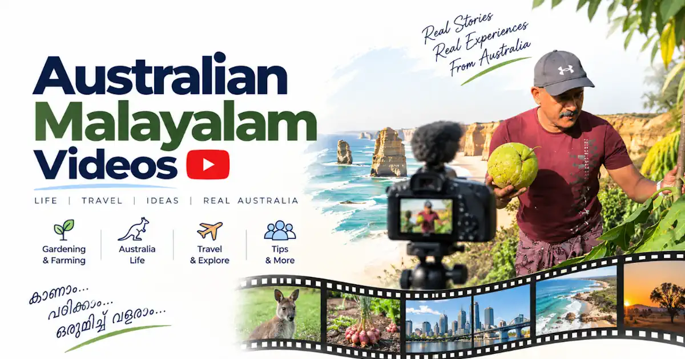

New

അങ്ങനെ അതും സംഭവിച്ചു 😥
ഓസ്ട്രേലിയയിലെ എൻ്റെ കൃഷി .
Malayalam videos on everyday life, culture and adventures in Australia - from Kerala-style gardening to information on jobs and migration. ഓസ്ട്രേലിയൻ ജീവിതത്തിൻ്റെ വീഡിയോകൾ ഇവിടെ കാണാം.

Subscribe on YouTube to follow new uploads and explore the full video library.
Popular Australian Jeevitham Shorts and videos from the channel.


Fresh uploads and selected favourites, ready to watch right here.
ഓസ്ട്രേലിയയിലെ എൻ്റെ കൃഷി .

കപ്പ ഒക്കെ നട്ടു വളർത്താൻ നല്ല പാടാണ് ഇവിടെ

വല്ല ഗുണവും ഉണ്ടോ ഇങ്ങനെ കൃഷി ചെയ്താൽ
Want more? The full library - including older uploads and Shorts - lives on our YouTube channel.
Australian Jeevitham shares publicly available information about Australian visas, migration pathways, settlement and related government processes. It does not provide migration advice or immigration assistance.

RMA vs immigration lawyer, OMARA/MARN verification, disciplinary checks, trust accounts, Form 956, and how to spot visa scams.

ATS-friendly formatting, tailored cover letters, selection criteria and STAR examples for Malayalis applying for Australian jobs.

Fact-checks and features from India Today Malayalam and Manorama Online on backyard farming, toddy-tapping, and life in Townsville.

A step-by-step roadmap for internationally qualified nurses covering Stream B, OBA, NCLEX-RN, OSCE, and English requirements.
From the Great Barrier Reef and Daintree to Uluru — travel ideas and official tourism resources for exploring Australia.
State-by-state rules for converting a Kerala/Indian licence across VIC, NSW, QLD, WA, SA, TAS, ACT and NT — deadlines, NAATI translation, and tests.